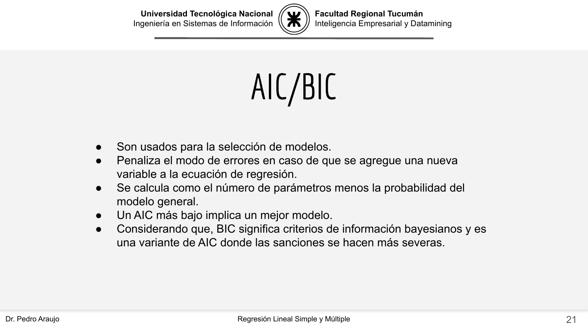
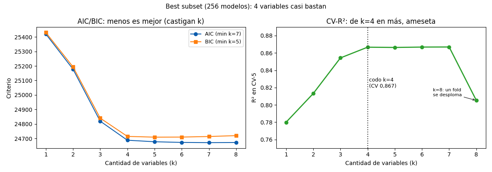

Bloque D · Regresión lineal, selección y regularización · Lección 0020 · mar 22 sep
Best subset y stepwise: buscar el mejor equipo
Win de hoy: probar los 256 equipos de 8 candidatas: el codo está en k=4 (CV 0,867), AIC pide 7, BIC 5, y con las 8 un fold se desploma (0,57).
1 · Best subset: probar todo (cuando se puede)
Best subset
prueba las 2p combinaciones: con 8 candidatas son 256 modelos (segundos); con las 37 columnas serían
137 mil millones (imposible). Por eso existe
lo goloso
(§3): forward y backward son las aproximaciones golosas a esta búsqueda total — 36 ajustes en vez de 256.
Pool de hoy: KM, Age, HP, Weight, cc, Tax, Year, Guarantee.
2 · AIC y BIC: ajuste menos castigo
R² siempre premia agregar variables (nunca baja en train), así que se necesita un criterio que castigue la complejidad: AIC resta 2 por parámetro, BIC resta log(n) ≈ 7,3. Acá AIC minimiza en k=7, BIC en k=5… y el CV dice que con k=4 (Year, Weight, KM, HP → 0,867) ya ameseta. Tres opiniones, un mensaje: de 4 en más, casi no se gana.

Mismo mensaje que el nuestro con otras palabras: el criterio castiga la complejidad (la cátedra habla de «penalizar» cada variable nueva; nosotros restamos 2 por parámetro en AIC y log(n) ≈ 7,3 en BIC, por eso BIC pide menos variables que AIC).
3 · Stepwise: lo goloso (y acierta)
Forward stepwise agrega de a una la que más mejora el AIC: Year → Weight → KM → HP → Tax → Guarantee → Age → cc. Acá coincide exacto con el óptimo exhaustivo (suerte + estructura limpia; en general lo goloso puede fallar). Costo: 8+7+…+1 = 36 ajustes vs 256.
Su primo backward hace lo inverso: empieza con las 8 y poda de a una la que menos aporta (la que deja el AIC más bajo al salir). El orden de eliminación medido es cc → Age → Guarantee → Tax → HP → KM → Weight (queda Year sola al final); el AIC minimiza al sacar solo cc (k=7, igual que forward y que best subset). Resultado honesto: acá backward es el espejo exacto de forward — mismo equipo en cada k (en k=4: Year, Weight, KM, HP) — así que los dos golosos aciertan. No siempre pasa: con predictores más enredados, forward y backward toman caminos distintos y ninguno garantiza el óptimo.
4 · Figura: criterios y codo

Regenerar la figura (mismo resultado versionado en assets/img/toyota/):
python3 scripts/make_figures.py --only best-subset-stepwise5 · Quiz (auto-chequeo inmediato)
6 · Fuente primaria y cierre
Para profundizar (1 fuente): James et al., An Introduction to Statistical Learning — capítulo de selección (subset, stepwise, AIC/BIC) (statlearning.com, PDF libre; también en RESOURCES.md del curso).
¿Algo no quedó claro? Preguntame al agente: por qué R² no sirve para elegir, AIC vs BIC, o cuándo forward falla. Esa pregunta vale más que releer.
Orden Bloque D: siguiente en el bloque, 0021 · Ridge y Lasso: achicar vs elegir: mié 23, la contracción (multar coeficientes en vez de elegir equipos).